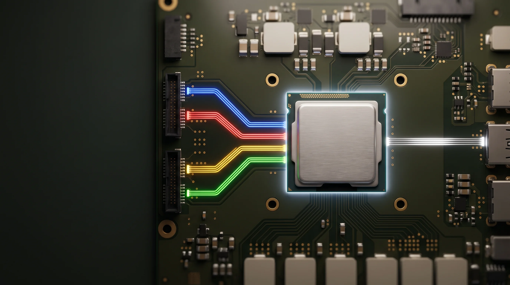
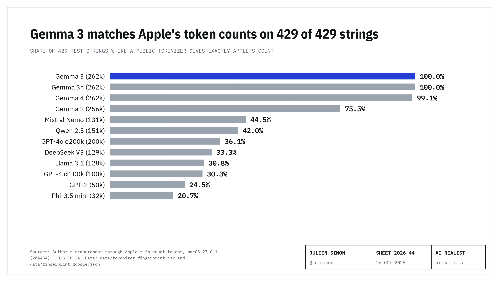

macOS 27 put a language model on every Mac that can run Apple Intelligence, and any script can call it: typefm respondin a terminal and it answers.[1] So what is it? How is it built, who built it, and what is it good for?
Apple's answers fit in three sentences. The model is Core Advanced, the larger of Apple's two on-device models, with 20 billion parameters of which 1 to 4 billion work at a time. Apple says it is "custom-built in collaboration with Google." It powers Siri's new voices and dictation, and the apps that call it.[2] Everything else you have to work out.
I can't read Apple's weights. Apple's license bars decompiling, disassembling and reverse engineering its software, and I won't test that line: I opened no model file, decompiled or disassembled nothing, dumped no memory, attached no debugger and left the Mac's system protection on.[3] I watched the Mac from the outside instead, with tools macOS ships (a file-read trace that gives file names, positions and sizes but never contents, the system log, the memory and power counters, the lists of names Apple's frameworks export) and with Apple's public commands: what the model reads from disk, how much memory it holds, how much power it draws, how it counts text and how it answers. I did that on a MacBook Pro with an M3 Max and 48 GB, beside open models that run on the same Mac. Where Apple gives no reason for a choice, I give mine and label it "Assumption." The scripts and the data are in a public repository, where each finding is a numbered item with its hypothesis or question, experiment, results and conclusion.[4]
Apple made a 20-billion-parameter model cost a Mac about what a 4-billion-parameter one does. It keeps the model in flash storage, wakes a few experts for each prompt, and runs them on the Neural Engine. Two seconds after a long request, Apple's model and its safety models held 2.0 GiB of memory; an open model of the same class, built the usual way, held about 15 GiB.[5] On the same 20 math problems, it used about a third of the energy of the best open build I ran.[6] You pay in math, where it finished last of four, and in control: you can't pin it or tune it.[7] And the one part of Google you can measure from outside is the tokenizer.[8]
The Core Advanced model card
A model card is the page a lab publishes to say what a model is. Apple has not published one for Core Advanced, so here is the one I could build from outside. Each line says where it comes from: Apple's own words, my measurements on this Mac, my inferences from them, or third parties. The repository holds each line's data.[9]
![Table: Core Advanced, a model card built from outside, measured on a MacBook Pro M3 Max, macOS 27.0.1, each value labeled by its basis. Identity: Core Advanced, the larger on-device model of Apple's third generation; Apple, "custom-built in collaboration with Google"; the OS 27.0 model, with no API to pin or read a version (Apple says, Apple staff). Architecture: a sparse decoder with experts chosen per prompt, built on Instruction-Following Pruning; 20 billion parameters stored, 1 to 4 billion active (Apple says); 56 layers, the first 12 dense and computing the routing, 44 with experts; hidden size 1,536; 212 experts per expert layer, hidden size 256, plus always-active shared experts (Apple paper, model not named); routing per prompt, reselected about every 32 tokens (Apple says and measured); grouped-query attention whose cache fits 8 KV heads of 128 in 35 layers at 8 bits, where the paper prints 12 (inferred); context 8,192 tokens, against 4,096 in Apple's documentation; vocabulary of 262,144 entries, Gemma 3's tokenizer with 775 reserved slots changed; text and images in, text out, no reasoning mode; 24 locales in the public API, 15 languages, with correct answers in all 10 test languages, Arabic, Hindi and Russian among them, outside the list (measured). Compression: about 2 bits per weight; a 192 MiB embedding table at 4 bits; an 8-bit attention cache of 35 MiB at 512 tokens and 560 MiB at 8,192 (inferred). Runtime on a Mac: a 4.95 GB expert file in flash read in 294,912-byte blocks; 636 MiB of resident pages and 2.0 to 3.4 GiB with the safety models; the Neural Engine at about 4 W with the GPU idle; a draft model of about 9 MiB, a use-case adapter and two 300-million-parameter safety models (system log). Training and use: public, licensed, open-source, study and synthetic data, no proportions; pre-trained on cloud TPUs and, as reported, refined using outputs from Gemini frontier models; use for summaries, extraction, classification, rewriting, tags and game dialog; avoid basic math, code and logical reasoning; Apple's evaluations cover voice and dictation at 1 billion active, and on my tests it solved 78 of 100 math problems against 89 to 94 for open builds; no developer adapters from OS 27.](image-02.webp)
How Apple's on-device model runs on a Mac
An app never touches the model. It calls Apple's Swift framework, thefmcommand orfm serve; a system service,modelmanagerd, then opens sessions with two processes that run as a system user.[10] The safety process holds two 300-million-parameter models, a safety classifier and a guard for images, with their own, smaller tokenizer; by their names, they screen the request. The log also names a text sanitizer, a deny-list of output tokens and an output safety configuration. The main process runs Core Advanced: a tokenizer, a small adapter for the use case, an image encoder, the dense block that picks experts, the experts, and a small draft model, which by its name guesses a few tokens ahead for the main model to check. 636 MiB of model pages stay loaded on the Neural Engine; the rest stays in a 4.95 GB file in flash, and a cache brings in the experts a prompt picks.[10] A request the device cannot handle goes to Private Cloud Compute, Apple's server models, and an app must choose that model itself.[11]
![Diagram: how Apple's Core Advanced runs on a Mac, from the system log, the file-read trace and the power meter, October 24th and 25th, 2026. An app or script calls the Swift framework, fm or fm serve, which reach the system service modelmanagerd over XPC; harder requests go to Private Cloud Compute, off the device. Two model processes run as a system user. The safety process, 0.7 GiB, holds a 300-million-parameter safety classifier, a 300-million-parameter multimodal guard and their own smaller tokenizer; the log also names a text sanitizer and output checks (a deny-list of tokens and an output safety configuration) without saying which process runs them. The main process, 1.3 GiB, runs Core Advanced: a tokenizer with Gemma 3's 262,144-entry vocabulary, a use-case adapter with 28.7 MiB of changeable weights, an image encoder, the dense block that picks experts about every 32 tokens, an expert cache filled with 294,912-byte blocks, 636 MiB of always-loaded weights, and a draft model of about 9 MiB for speculative decoding. The Neural Engine runs the main model at 4.2 W reading a prompt and 3.8 W writing, with the GPU idle. Below, flash storage holds the 4.95 GB expert file with all 20 billion parameters, read on demand. Numbered steps: the request is screened, the main model writes, the answer is checked.](image-03.webp)
Two things stand out. First, Apple dropped adapters for developers in OS 27 but kept them for itself: the bundle the public API loads is the base model plus an adapter named for it, and Apple's catalog lists a draft model for 135 use cases.[10] Assumption: Apple tunes each of its own features with a small adapter it ships and retrains with each OS, and a third-party adapter, trained on last year's base model, would break at every update. Second, the safety models are a separate process with a separate tokenizer. Apple can update them without touching the main model, and they cost memory, 0.7 GiB of the 2.0.
What Apple asked it to do
Apple names the jobs. On its research page, Core Advanced is "natively multimodal, enabling helpful features like expressive voices and higher-accuracy dictation," and Siri's new voices are "powered by" it.[2] For apps, Apple's developer guide lists what the on-device model is for: summarizing, extracting entities, understanding, refining and classifying text, creative writing, tags and game dialog. The same guide lists three "capabilities to avoid": basic math, code and logical reasoning. Apple's 2025 report said its earlier on-device model "is not designed to be a chatbot for general world knowledge."[12]
Then Apple names the limit. "Traditional large language models," its page says, "require all weights to reside in active memory (DRAM), creating a massive footprint that limits scalability on consumer hardware."[13] A Mac's memory is shared by the CPU, the GPU and every app you have open. The model sits in it all day, beside your browser and your editor, and on a laptop it runs on a battery. Apple's storage page sets its larger tier for Macs with an M3 or later and at least 12 GB, and MacRumors says that is what Core Advanced requires.[14]
So the job is a model good enough for dozens of short tasks, light enough in memory to stay loaded next to your apps, and frugal enough with power to run voice and dictation all day. Three of the choices below are new this year: experts kept in flash, experts chosen per prompt, and a model that runs at more than one size. Apple made the other four before: the Neural Engine, heavy compression, separate safety models and a short task list.[15]
The design, choice by choice
Keep the model in flash, choose experts per prompt
A mixture-of-experts model splits each layer into many small networks, the experts, and runs only a few for each token. The usual design picks new experts for every token, so every expert must sit in memory. Apple's page says why that does not work here: "NAND-to-DRAM bandwidth is too slow to swap weights token by token, as standard MoE models require." So Core Advanced "makes routing decisions per prompt." A small dense block picks a fixed set of experts when it reads your prompt and reselects them from time to time as it writes, with "a high percentage of always-active 'shared experts'" to keep the traffic down.[13]
This is Apple's own line of research. In December 2023, Apple researchers showed how to run models "that exceed the available DRAM capacity by storing the model parameters in flash memory," and warned that flash is fast for large reads, not for "smaller, random reads."[16] In January 2025 they described Instruction-Following Pruning, which fixes the parameters for a task once and so "significantly reduces the weight loading cost."[17] Apple says Core Advanced is built on it.[13] And on October 5th, 2026, six Apple researchers posted a paper on routing for models on devices, where the workload "becomes an I/O-bound one," with experts "reloaded every S inference steps."[18]
The Mac shows the design at work. While the model answers, it reads one 4.95 GB file in blocks of exactly 294,912 bytes. On the first prompts after loading, it reads about 1% of the file a fifth of a second in; later prompts, with experts already in memory, read less. Then it reads a few blocks at a steady rhythm: every 32 tokens in a code answer written at 58 tokens a second, every 32 in an essay at 33 tokens a second, every 31 in a geology answer at 45.[19] The rhythm is counted in tokens, not seconds. Assumption: the model reselects every 32 tokens; on a long prompt the gaps were irregular, which fits reselections that find their experts already in memory and read nothing.[19] Assumption: the blocks are experts; the file name, Apple's description and the byte count all point there, and other shapes give the same count.[20]
![Two bar charts of the 294,912-byte expert reads over time, one bar per 100 milliseconds. Top: a code prompt's 519-token answer, written at 58 tokens a second over 9.4 seconds, with 156 reads in the first burst just after the prompt, 105 at 0.6 seconds, and smaller bursts about every half second, the largest 36, 32, 19, 17, 12 and 11 reads. Bottom: the first 21 seconds of a 3,038-token essay answer written at 33 tokens a second, with 11 reads in the first burst, 20 at 0.7 seconds and 28 at 14.4 seconds, and nothing in most windows in between.](image-04.webp)
Now compare an open model of the same class, built for per-token routing. Google's Gemma 4 26B A4B stores 25.2 billion parameters and runs 3.8 billion for each token, 8 of its 128 experts plus a shared one.[21] At 4 bits on the same Mac, two seconds after the same long request, its server held about 15 GiB. Apple's two processes held 2.0 GiB.[5] That is the case for Apple's design in one comparison: the same idea, a big model with a small part at work, costs seven times the memory when experts change at every token. About half of that is bit width, 4 bits against about 2; the rest is that per-token routing makes the server hold every expert. Google aims that model at "consumer GPUs and workstations," not phones.[21]
![Bar chart: memory held two seconds after the same 5,000-token request on a MacBook Pro with an M3 Max, October 24th and 25th, 2026, in GiB, by macOS's footprint tool. Apple's Core Advanced, about 2-bit, with its safety models 2.0. Dense open builds behind a local server: Gemma 3 4B 3.4 (4-bit), Qwen3 4B 3.9 (4-bit), Gemma 4 E4B 4.6 (4-bit), Gemma 3 4B 5.6 (8-bit), Qwen3 4B 5.7 (8-bit), Gemma 4 E4B 8.1 (8-bit). Mixture-of-experts open build routed per token: Gemma 4 26B A4B 15 (4-bit, read to the nearest GiB).](image-05.webp)
Google's answer for small devices is different again. Gemma 3n keeps large per-layer embedding tables out of accelerator memory, so only "the core transformer weights" must sit there, and its larger model contains the smaller one; the small Gemma 4 models carry the same per-layer embeddings.[22] Assumption: Google builds for many makers' phones and boards, so it splits the model by kind of parameter, which any device can do; Apple builds for one family of chips and one storage system it controls, so it splits the model by expert and leans on fast flash. (My Gemma memory figures do not show Google's design at work: by my reading of its 8.1 GiB, the server kept all of Gemma 4 E4B's 8 billion parameters in memory.[22])
Apple also lets the model run at more than one size. Core Advanced "uses a predetermined number of active parameters tailored to each specific use case," from 1 to 4 billion, so weights are "loaded incrementally across requests of varying difficulty."[13] Apple's only published results for Core Advanced, for voice and dictation, were measured "At its 1-billion-parameter activation size."[23] Assumption: speech, which runs all the time, uses the smallest size, and text tasks use more. Google described a similar switch for Gemma 3n and says it is "not part of today’s launched implementations."[22]
Assumption, on the 32-token period: Apple's October paper found that "a segment length of 16 outperforms a segment length of 32" on every benchmark it ran, so Apple ships 32 to halve the flash reads and accepts a small loss in quality.[18]
Compress to about 2 bits
Apple's 2025 report says "we compressed the on-device model to 2 bits-per-weight," and its new page says the new models were compressed with the same kind of training, without a bit width.[24] What the Mac shows fits 2 bits. The Neural Engine's log counts 636 MiB of model pages that stay loaded, at most 2.7 billion weights at 2 bits, which fits 1 to 4 billion active. One 294,912-byte block is exactly the size of one expert of the dimensions in Apple's October paper at 2 bits.[25] Assumption: the bit width serves the flash design too, because every bit saved is a byte not read at each reselection.
Run on the Neural Engine
Apple's 2024 report already described its on-device model "running on Apple Neural Engine."[26] On this Mac, the Neural Engine drew 4.2 watts while the model read a long prompt and 3.8 while it wrote, and the GPU stayed at its idle clock.[27] Apple gives no reason specific to the chip; its 2025 report credits its optimizations as a whole with "reducing power consumption."[24]
I measured what that buys. The same 20 grade-school math problems went to Apple's model and to three open models on the GPU, Google's Gemma 3 4B and Gemma 4 E4B and Alibaba's Qwen3 4B, while macOS's power meter sampled the chip twice a second. Apple's model used about a third of the energy of the best open build for the same 20 problems, and the least per problem solved, though it solved only 13 of them.[6] Halving the open builds' weights from 8 bits to 4 did not lower their energy by more than the run-to-run noise. The open builds run about 4 billion parameters per token, close to Apple's 1 to 4 billion, and Apple's answers were a little shorter. Assumption: most of the gap is the Neural Engine.[6]
![Two bar charts for the same 20 GSM8K math problems on a MacBook Pro with an M3 Max, October 25th, 2026, 8-bit open builds, CPU, GPU and Neural Engine power only. Left: energy above idle for the 20 problems, with mean power: Apple's Core Advanced on the Neural Engine 465 joules at 5.3 W; Qwen3 4B 1,273 joules at 15.3 W; Gemma 3 4B 1,595 joules at 20.4 W; Gemma 4 E4B 1,942 joules at 16.2 W. Right: joules per problem solved: Apple 35.7 (13 solved), Qwen3 63.6 (20 solved), Gemma 3 84.0 (19 solved), Gemma 4 102.2 (19 solved).](image-06.webp)
Assumption: the Neural Engine is also why Apple routes per prompt. The Neural Engine runs programs compiled ahead of time, and the model's programs on this Mac are compiled for its chip family;[10] a set of experts that holds for 32 tokens suits it; a set that changes at every token would not. The flash design and the chip choice fit each other, and the GPU stays free for your apps.
Keep safety in a separate model
Apple says it uses "language-specific guardrail models," and that "Guardrails are a safety system tied to a specific model."[29] They run in their own process (see the diagram) and refused 4 of my 300 benchmark questions, one of them a grade-school problem about a race with Japanese and Chinese runners; the maintainers of an open-source tool saw them refuse the Apollo 11 plaque.[29] Apple gives no reason for a separate model. Assumption: a separate model can be swapped per language and updated without retraining the main one, and it puts the same check in front of every app. Apple chose control and paid for it in memory.
Keep the tasks short
The public API reports an 8,192-token window on this Mac, twice the 4,096 that Apple's documentation still states.[30] Assumption: the window is small because the memory budget is small; the attention cache alone takes 560 MiB at 8,192 tokens, and the wait for the first word grows with the square of the prompt, to 9.5 seconds at 6,900 tokens.[25][28] It matches Apple's task list: short inputs, short outputs.
What Google brought, and what Apple built
Apple and Google said in January that Apple's next models "will be based on Google's Gemini models and cloud technology." Apple's page says "custom-built in collaboration with Google," and that "we significantly scaled pre-training on the latest generation of cloud TPU accelerators," Google's chips, which Apple also used in 2024.[31] At a press briefing on June 8th, as 9to5Mac transcribed it, Apple's vice president of AI said the models were "refined using outputs from Gemini frontier models," and Craig Federighi said Apple uses "none of the models that Google deploys to their customers."[32]
None of them names the tokenizer, the part of a model that cuts text into tokens, and a Mac can check it. Apple'sfm count-tokensgave Gemma 3's count on all 429 strings I tried, from code to sentences in 18 languages; tokenizers from other labs matched on less than half. Google's own counting endpoint returned Apple's count on every string I sent it.[8] Apple adapted it: 775 of the 6,242 placeholder slots in Gemma's vocabulary no longer count as one token. Assumption: those are Apple's own control markers.[33]

Why Gemini's tokenizer? Apple doesn't say. Assumption: Apple trains its small models on a larger teacher's predictions, as its 2024 and 2025 reports describe, and that kind of training needs the teacher's vocabulary; with Gemini as the teacher, the student takes Gemini's tokenizer. The Information reported in March, as two outlets relayed it, that Apple has the access to do that with Gemini; that is reported, not confirmed.[34]
The published line of research is Apple's. Experts kept in flash and chosen per prompt run through Apple's papers from 2023 to this month and appear in none of Google's Gemma model cards.[16][17][18][22] The strongest case against that reading is in Apple's own October paper: a model pruned this way "cannot be pre-trained rather only upcycled," so it starts from a dense model someone trained first.[18] Assumption: that dense model was trained with Google's help, on Google's chips, with Gemini's tokenizer and Gemini as the teacher, and Apple then pruned it into its own design. That reading fits both "based on" and "collaboration".
In March,I wrotethat Apple had "opted out of the intelligence race entirely." That sentence needs an update, and it was partly right. The training leans on Google: its chips, its tokenizer and, by Apple's account, Gemini's outputs. The engineering and the hardware integration are Apple's: the flash design, the Neural Engine programs, the runtime around the model. For a company that sells devices, not models, it is a sensible split. And in June, Apple extended Private Cloud Compute to NVIDIA GPUs in Google Cloud, which updates my March note on where its Gemini-based model runs.[11]
What it costs you
Math, first. On 100 grade-school problems, Apple's model solved 78 and the three open builds 89 to 94, a gap too large for chance; on 200 knowledge questions it sat in the middle.[7] That is what 1 to 4 billion active parameters at about 2 bits buys, and Apple says as much: basic math is on its list of things to avoid.[12]
![Table: the same 100 GSM8K grade-school math problems and 200 MMLU knowledge questions, zero-shot at temperature 0, on one MacBook Pro, October 24th, 2026. Math problems solved, with 95% intervals: Apple's Core Advanced 78 (69 to 85), Google's Gemma 3 4B 89 (81 to 94), Google's Gemma 4 E4B 94 (88 to 97), Alibaba's Qwen3 4B Instruct 93 (86 to 97). Knowledge questions right: Apple 134 of 200, 67.0% (60 to 73); Gemma 3 118, 59.0% (52 to 66); Gemma 4 139, 69.5% (63 to 75); Qwen3 144, 72.0% (65 to 78). Each open build's math lead over Apple is larger than chance; no knowledge gap survives a correction for three comparisons. The open builds ran at 8 bits with output caps; Apple's model ran uncapped.](image-08.webp)
Then control. You can't pin the model: an Apple engineer wrote that there is "currently no pinning or model version retrieval API," and the model changes with the OS.[35] In one developer's test, the model's verdicts changed on 11 of 227 messages across the update, with the same code and prompt.[36] And you can't tune it: Apple dropped developer adapters in OS 27 "for performance reasons," an Apple staff member wrote.[37] Assumption: both follow from one choice, one base model per OS, replaced at every update, with Apple's own adapters retrained alongside it.
So run your own test. Write 100 questions from your own work, run them through Apple's model and an open one with the same prompts at temperature 0, and count the questions only one of them gets right. If they disagree on 20, the winner needs 15 before the gap is more than chance.[7] Run it again after every OS update.
In short
Core Advanced is first-rate AI engineering. Apple took a 20-billion-parameter model, kept it in flash and made it run in about 2 GiB of a laptop's memory, on about a third of the energy of the open models I set beside it, with the GPU idle.[5][6][27] It did that with a design from its own research, from its 2023 flash paper to this month's routing paper, compiled for its own chip and wrapped in an operating-system service with its own safety models. No open model I ran works this way. Google's part is in the training: the chips, the tokenizer and, by Apple's account at a briefing 9to5Mac transcribed, outputs from Gemini models. The engineering that makes it fit on a Mac is Apple's.
Use it for short, fixed-shape jobs where memory and battery matter more than reasoning: summaries, extraction, classification, tags, rewrites. Do not use it for math, code or anything that needs a pinned version or a tuned model; run an open model for those.
Next, Apple owes a technical report, announced for the summer and still missing as of October 25th.[38] Assumption: the next model moves to Gemma 4's tokenizer, which Google's own software already assigns to its newest Gemini models, and Apple ships the variable sizes of its October paper so that an app can trade speed for quality.[39]
And Apple should release the weights. They already sit on every eligible Mac, 4.95 GB of them, and Apple has published open weights before, on Hugging Face: OpenELM under a research-only license, DCLM-7B under its sample-code license.[40] Open weights under a license that allows commercial use would let developers pin a version, tune the model for their own jobs, and check for themselves what came from Google. Today the license bars taking it apart. Apple built something new and very good here; it should let people study it and build on it.
Notes
[1] Author's observation, October 24th, 2026, on the MacBook Pro in note [4]; the tool is/usr/bin/fm.fm --helpprints the title "Apple Foundation Models CLI", the commandsavailable,chat,count-tokens,license,respond,schemaandserve, and the modelsystem, "On-device Apple Foundation Model (default)" (saved in the repository asdata/fm_help.txt). Apple's WWDC26session 334calls it "the brand new fm command introduced in macOS 27". Apple'sstorage page for Apple Intelligence, published October 22nd, 2026, says the next generation of Apple Intelligence "is automatically available on eligible devices as part of the operating system when you update to the 27.0 software releases", and adds "in supported languages and regions".
[2] Apple Machine Learning Research,"Introducing the Third Generation of Apple's Foundation Models", June 8th, 2026 (updated September 9th, 2026), accessed October 24th, 2026: "At the heart of this architecture is our third generation of Apple Foundation Models (AFM), a family of five foundation models custom-built in collaboration with Google."; "AFM 3 Core Advanced is unlocked by and optimized for our most capable Apple silicon systems"; a "20-billion-parameter model" that "uses a sparse architecture, activating just 1 to 4 billion parameters at a time depending on the request"; it is "natively multimodal, enabling helpful features like expressive voices and higher-accuracy dictation." Under related reading: "Siri Expressive Voices synthesize rich, configurable speech in real time and entirely on device, powered by AFM 3 Core Advanced, Apple’s most powerful on-device foundation model." The page does not name Gemini. Apple's public API reports Core Advanced on the Mac in note [4] (repository item 12). Apple's own researchers describe the model the same way: the voice paperMemory Efficient Audio Synthesis with Decoupled Temporal Depth Diffusion Transformers, arXiv 2607.23811v2, August 17th, 2026, eleven authors, affiliation Apple, says "AFM 3 Core Advanced is natively multimodal and built on a sparse, 20-billion-parameter architecture that uses Instruction-Following Pruning (IFP) Hou et al. (2025)", with "1–4 billion active parameters, reselected periodically during generation" and "a set of always-active shared experts".
[3] Apple, Software License Agreement for macOS, the copy installed on the Mac in note [4] at/Library/Documentation/License.lpdf/Contents/Resources/English.lproj/License.html(read October 25th, 2026; saved by hand), section N, "No Reverse Engineering": "You may not, and you agree not to or enable others to, copy (except as expressly permitted by this License or by the Usage Rules if they are applicable to you), decompile, reverse engineer, disassemble, attempt to derive the source code or training data of, decrypt, modify, or create derivative works of the Apple Software or any services provided by the Apple Software or any part thereof (except as and only to the extent any foregoing restriction is prohibited by applicable law or by licensing terms governing use of Open-Sourced Components that may be included with the Apple Software)." Thefmtool's own notice, printed byfm license --showon October 24th, 2026, binds the user to that license and adds, in capitals, "YOU ARE ALSO AGREEING TO NOT PROGRAMMATICALLY ACCESS OR USE APPLE MODELS THROUGH APPLE SOFTWARE OR SERVICES EXCEPT AS EXPRESSLY PERMITTED". Apple's WWDC26session 241says "I can even plug fm into shell scripts to summarize documents, extract information, or generate content"; I ranfmandfm servefrom scripts on my own Mac. When a developer asked on Apple'sforumswhether an app distributed to users may callfm serve, the Apple Designer's reply pointed to the Developer Program License Agreement and gave no yes or no.
[4] Author's measurements, October 24th and 25th, 2026, on a MacBook Pro (Apple M3 Max, 48 GB, macOS 27.0.1, build 26A434). Companion repository,apple-fm-mac: one folder per finding,findings/01-model-card/tofindings/16-attention-cache-shape/, numbered by topic; "item 05" in these notes meansfindings/05-power-and-energy/. Each item gives the hypothesis (or the question, when none was written first), the experiment with its commands and files, the results, and the conclusion with what it does not show;scripts/check_numbers.pyrecomputes the numbers from the data files, except the expert-read cadence, which is worked in item 02. Code is under the MIT license; text and data under CC BY 4.0. Method boundary: the tools werefs_usage(system-call names, file descriptors, offsets and sizes, never contents),footprintandvmmap(memory counters and region layout),powermetrics(power counters), the unified log, Apple's publicfmtool and Foundation Models API, and the names that Apple's frameworks export (dyld_info -exports, names only). No model file was opened, nothing was decompiled or disassembled, no process memory was dumped or sampled, no debugger was attached, and System Integrity Protection stayed on. The raw file-read traces, memory maps and name listings are not in the repository, because they name files in Apple's protected asset folder; the numbers they gave are. Hypotheses written before their tests: H1, Gemma 3 within 10 points of Apple's model on both tests (failed, math gap 11 points; item 09); H2, Apple's model about as good as Gemma 3 on events from September 2024 on, within 20 points (held; item 13); H3, Apple's model below every open build in energy per solved problem (held; item 05); H4, the per-token open model holds 12 GiB or more two seconds after the request (held; item 04); H5, the long-context reselection period between 28 and 36 tokens (neither held nor failed; item 02).
[5] Repositoryitem 04. Memory by macOS'sfootprinttool, for each process its whole footprint plus the Neural Engine memory that macOS leaves out of it, read at the same three moments of one 5,000-token request: idle (one second after a one-word request), during (Apple: one snapshot three seconds into the prefill; open builds: the largest of 39 to 113 readings during the request) and after (two seconds after the request ended). Apple, after: main process 293 MiB plus 1,068 MiB of Neural Engine memory, 1,361 MiB; second process, which runs the safety models, 140 plus 535 MiB, 675 MiB. Author's calculation: 1,361 + 675 = 2,036. The result is in MiB, about 2.0 GiB. Author's calculation: 675 ÷ 2,036 ≈ 0.33. That is the safety process's share. Apple at idle: 2,848 MiB; during: 3,437 MiB, both processes, so between 2.0 and 3.4 GiB at every moment measured. Dense open builds, eachmlx_lm.serverprocess, after: 3.4 to 4.6 GiB at 4 bits and 5.6 to 8.1 GiB at 8 bits.Gemma 4 26B A4Bat 4 bits, October 25th, 2026: idle 14.0 GiB, during 16.0, after 15.0, ten seconds later 15.0;footprintprints whole gigabytes at that size, so these figures are good to about 1 GiB. Its hypothesis was written before the run (data/compare/HYPOTHESIS_moe_footprint.md). Not measured: Apple's memory after minutes of rest, and any Mac with less memory. Author's calculation: 15.0 ÷ 1.99 ≈ 7.5. That is the ratio behind "seven times"; withfootprint's 1 GiB steps it lies between 7 and 8. The open build ran at 4 bits and Apple's weights are about 2 bits per weight (note [25]), so about half of the ratio is bit width.footprintdoes not count the operating system's file cache of the 4.95 GB expert file, which macOS can evict.
[6] Repositoryitem 05.powermetrics(CPU, GPU and Neural Engine power, every 500 ms, run as root) while each model answered the same 20GSM8Ktest problems through the same client code (Apple's model throughfm serve, the open builds throughmlx_lm.server), with an idle baseline subtracted. The scripts' totals were recomputed from the raw samples by a second script with its own parser (scripts/energy_recheck.py), within 0.5 J. 8-bit set, October 25th, 2026, 00:48: Apple 464.6 J (13 of 20 solved, the 14th refused by the guardrail), 23.2 J a problem, 35.7 J per problem solved; Qwen3 4B 1,272.9 J (20 solved, 63.6 J); Gemma 3 4B 1,595.3 J (19 solved, 84.0 J per solved problem); Gemma 4 E4B 1,941.7 J (19 solved, 102.2 J). Author's calculation: 464.6 ÷ 1,272.9 ≈ 0.365. That is Apple's total as a share of the best open build's. 4-bit set, clean run, 07:50: Apple 529.7 J (40.7 per solved problem), Qwen3 1,529.9 J (76.5), Gemma 4 E4B 1,680.3 J (88.4), Gemma 3 1,716.4 J (95.4). Author's calculation: 529.7 ÷ 1,529.9 ≈ 0.346. A first 4-bit run, at 01:33, is not used: the Mac slept twice during it, and after it woke the GPU ran at about 1,040 MHz instead of 1,380, which roughly halved the energy of two open builds (Qwen3 858.9 J against 1,529.9). Author's calculation: 1,529.9 ÷ 858.9 ≈ 1.78. All three runs were on battery. Limits: no DRAM or SSD power, whichpowermetricsdoes not report on this Mac; 20 problems; one run per set; answer lengths not recorded. Run-to-run noise: Apple's own total moved from 464.6 J to 529.7 J between the two sets, and the idle baselines were 185 and 461 mW; against that, Qwen3 rose from 1,272.9 J at 8 bits to 1,529.9 J at 4 bits and Gemma 4 E4B fell from 1,941.7 J to 1,680.3 J. Answer lengths, from the 100 math problems of repository item 09 (same prompts): Apple wrote 24,845 tokens, Qwen3 27,265 and Gemma 4 34,015, so part of the gap is shorter answers. SSD power, which Apple's flash reads use, is not counted.
[7] Repository item 09. 100 problems from theGSM8Ktest split and 200 questions from theMMLUtest split, drawn with seed 7, zero-shot, temperature 0, the same prompts and scoring for every model. Apple's model ran throughfm servewith no output cap; the open models ran as 8-bit MLX builds (Gemma 3 4B,Gemma 4 E4B,Qwen3-4B-Instruct-2507) with thinking off, which favors Apple's model, since it has none. Math: Apple 78, Gemma 3 89, Gemma 4 94, Qwen3 93. Knowledge: Apple 134 (67.0%), Gemma 3 118 (59.0%), Gemma 4 139 (69.5%), Qwen3 144 (72.0%). Questions only one model of the pair got right, with the exact two-sided McNemar p: math 13 to 2 (p = 0.007), 18 to 2 (p = 0.0004), 17 to 2 (p = 0.0007); knowledge, open model against Apple, 14 to 30 (p = 0.023; 0.068 after Holm's correction for three comparisons), 23 to 18 (p = 0.53), 25 to 15 (p = 0.15). Rerun behind a local server with the client code used for Apple's model, no count moved by more than 1. Apple's guardrail refused 4 of the 300 requests, each counted wrong.fm serveadds about 46 framing tokens to every request that I could not read (item 08). Worked example for the advice: with 20 questions on which two models disagree, 15 to 5 gives p = 0.041 and 14 to 6 gives p = 0.115 (exact two-sided test, author's calculation). The open builds were capped at 1,000 tokens for math and 8 for knowledge, and Apple's model ran uncapped. Read from their final answers, the eight capped knowledge replies change Qwen3 to 150 of 200 (75.0%; 28 to 12 on the questions only one model got right, p = 0.017), still above Apple.
[8] Repository item 07. Each of 429 strings was counted with Apple'sfm count-tokens -q, which returns one token more than the text alone (subtracted), and with each public tokenizer through the Hugging Facetokenizerslibrary (OpenAI's tiktoken for GPT-4 and GPT-4o). Gemma 3 (unsloth/gemma-3-4b-it, whose tokenizer file has the same git object id as the one in Google's own repository): 429 of 429. Gemma 3n 429 of 429; Gemma 4 425 of 429 (it differs on four strings with an HTML heading tag); Gemma 2 75.5%; Mistral Nemo 44.5%, Qwen 2.5 42.0%, GPT-4o 36.1%, DeepSeek V3 33.3%, Llama 3.1 30.8%, GPT-4 30.3%, GPT-2 24.5%, Phi-3.5 mini 20.7%. Google'stoken-counting endpointreturned Apple's count on all 257 public strings sent to it, under each of four model names, gemma-4-31b-it and gemini-3.1-pro-preview among them. On four strings with an HTML heading tag, where Gemma 4's own tokenizer gives 13 or 14 tokens, the endpoint returned Apple's 7 or 8 under both names, so its count is not evidence for any one model's tokenizer. Google says Gemma 3 uses the tokenizer of Gemini 2.0 (Gemma 3 Technical Report, section 2.2: "We use the same tokenizer as Gemini 2.0"). Equal counts show the same vocabulary in practice; they cannot show where the weights came from. The strings: English prose, code, sentences in 18 languages, numbers, URLs, emoji and rare words; 172 of them are private and the repository holds only their counts.
[9] Repository item 01, which lists each line of the card with its basis and the item that holds its data (the card is built fromdata/tables.json). The labels: "Apple says" for Apple's own pages and reports, "Apple staff" for staff answers on Apple's forums, "measured" for this Mac, "inferred" for arithmetic or reading from measurements, "reported" for the press briefing in note [32], "system log" for names and figures read from the unified log, and "Apple paper" for the October paper in note [18], which does not name the model. The languages line: REPORT sections 7.1 and 8 (data/public_api_query.swift,data/language_support.swift): the public API'ssupportedLanguagesreturns 24 locales in 15 languages; one prompt each in French, Japanese, Spanish, German, Korean, Arabic, Hindi, Portuguese, Russian and Italian got a correct answer, Arabic, Hindi and Russian outside the list; the safety models are requested per language (instruct_300m.safety?language=en). The vocabulary line: 775 reserved slots no longer count as one token (note [33]); that Apple reuses them is an assumption. The layers, hidden size and experts are the paper's 12-billion-parameter configuration, which the paper says "might change on scaling". The attention line: the measured cache takes 35,840 bytes a token for each of K and V (293,601,280 bytes at the 8,192-token bucket), and 35,840 has no factor of 3, so no count of layers and heads gives it with twelve KV heads. Author's calculation: 35 × 8 × 128 × 1 = 35,840. The result is bytes a token per tensor: 35 layers holding a cache (62.5% of 56, the share Apple's 2025 report keeps), 8 KV heads of 128 (the 2024 report's figures) and 8-bit entries (the 2025 report's). Other readings fit too (70 × 4 × 128 × 1, 35 × 4 × 128 × 2; repository item 16). The embedding line: a 192 MiB memory surface that persists between requests is 262,144 × 768 bytes, 4 bits at a width of 1,536 or 2 bits at 3,072 (repository item 07).
[10] Repositoryitem 06,repository item 04andrepository item 16, andREPORT sections 1, 2, 5, 22 and 28. The system log of October 24th, 2026, names the assets of the main model (instruct_3b.basewith variantgeneric_sparse, the adapterfm_api_generic_3b"for the public API", a draft model, a tokenizer, an image encoder andshared_experts_cost_placeholder_3b) and of the second family (instruct_300m.base,instruct_300m.safety,instruct_300m.mm_guard, a tokenizer and an image tokenizer), plustokenoutputdenylist.templateandsafety.output.configuration. Onefm respondcall opens sessions, in order, for a text sanitizer from Apple'sSensitiveContentAnalysisML, the main bundle, the 300M safety model and the 300M multimodal guard, then the deny-list. The models run in two provider processes owned by the system user_modelmanagerd; the tokenizer files differ (11.9 MB and 8.6 MB). The log reports 40,680 resident pages for the main model and 11,611 for the second (636 and 181 MiB), and the Neural Engine maps a 30,081,024-byte "mutable weights buffer" (28.7 MiB). The draft package's Neural Engine pages are 575 of 16 KiB (9.0 MiB). The model catalog listsDraftModelentries forInstructFMApiGenericand 134 other use cases; the catalog and asset names were read withdyld_info -exports, which lists the names a framework exports, and from the system log; no model file was opened. That the 300M models screen input and output, and that the draft model proposes tokens for the main model to verify, are readings of those names and of the decode timings (REPORT 22.1: 9.9 ms a token on repeated words against 23 to 25 ms on prose at the same context). The five models: the main model's base, its draft model and its image encoder, and the 300M safety classifier and multimodal guard. The model is compiled ahead of time for the Neural Engine family of this chip (a program namedmain-h15c.odix, REPORT 21) and loaded into Neural Engine memory.
[11] Apple Security Research,"Expanding Private Cloud Compute", June 8th, 2026: Private Cloud Compute serves "those AI workloads more complex than on-device models can handle." Apple,WWDC26 session 241, on the server model: "It is a much bigger model than the on-device models, and has a 32,000 token context window, and it comes with a powerful new capability, reasoning." On June 8th, 2026, the same post: "we worked with Google and NVIDIA to extend our PCC infrastructure to Google Cloud systems using NVIDIA GPUs", and "Regardless of where the infrastructure is hosted, Apple retains complete control over PCC software". Session 241 presents the server model as a separate choice for developers: "we're giving you access to a brand new PrivateCloudComputeLanguageModel", with "the entitlement you'll need to use it".
[12] Apple,Generating content and performing tasks with Foundation Models, accessed October 24th, 2026 (saved by hand): the tasks listed are "Summarize", "Extract entities", "Understand text", "Refine or edit text", "Classify or judge text", "Compose creative writing", "Generate tags from text" and "Generate game dialog"; "The on-device language model may not be suitable for handling all requests, like:" followed by a table headed "Capabilities to avoid" with "Do basic math", "Create code" and "Perform logical reasoning". Apple,Apple Intelligence Foundation Language Models: Tech Report 2025, section 7: "While we have specialized our on-device model for these tasks, it is not designed to be a chatbot for general world knowledge."
[13] TheApple pagein note [2], accessed October 24th, 2026: "Traditional large language models—whether dense or sparsely activated—require all weights to reside in active memory (DRAM), creating a massive footprint that limits scalability on consumer hardware. To break this barrier, AFM 3 Core Advanced introduces a novel sparsely activated architecture built on Instruction-Following Pruning (IFP), a technique developed by Apple researchers." "Because NAND-to-DRAM bandwidth is too slow to swap weights token by token, as standard MoE models require, AFM 3 Core Advanced makes routing decisions per prompt. A lightweight, dense block selects a fixed set of experts during initial processing, periodically reselecting them during generation. To minimize data movement, the model relies on a high percentage of always-active 'shared experts' alongside input-dependent 'routed experts' swapped into DRAM only when needed." "Rather than using a single model for all tasks or managing an ensemble of smaller models, AFM 3 Core Advanced uses a predetermined number of active parameters tailored to each specific use case. This allows weights to be loaded incrementally across requests of varying difficulty, scaling the model size far beyond traditional DRAM limits while minimizing latency." Thevoice paperin note [2] confirms the per-prompt design from Apple's research side: "1–4 billion active parameters, reselected periodically during generation" and "a set of always-active shared experts".
[14] Apple'sstorage page for Apple Intelligence, published October 22nd, 2026: "Up to 14 GB of storage on device" for "Mac models with M3 and later and at least 12GB of unified memory", and up to 8 GB for other models; it does not say which model each tier gets. MacRumors, Tim Hardwick,September 23rd, 2026: "Both of these systems will be using Apple's AFM 3 Core Advanced on-device model, which requires an M3-or-newer Mac with 12GB or more of RAM." Apple's own model page says only "our most capable Apple silicon systems" (note [2]).
[15] The split is my reading of Apple's earlier reports. Apple's2024 reportdescribes the on-device model "running on Apple Neural Engine (ANE)" and "3.7 bpw in production"; the2025 reportcompresses it "to 2 bits-per-weight using Quantization-Aware-Training", says "we expanded our guardrail models", and gives the task scope in note [12]. Neither report describes experts in flash, per-prompt routing or variable active size for an on-device model; the 2025 report uses a mixture of experts only for its server model.
[16] Alizadeh et al., Apple,LLM in a flash: Efficient Large Language Model Inference with Limited Memory, arXiv 2312.11514, submitted December 12th, 2023 (version 3 of July 30th, 2024 read; saved by hand), abstract: "This paper tackles the challenge of efficiently running LLMs that exceed the available DRAM capacity by storing the model parameters in flash memory, but bringing them on demand to DRAM." Section 2: "benchmarks on an Apple MacBook M1 Max with 1TB flash memory demonstrate speeds exceeding 6 GiB/s for a 1GiB linear read of an uncached file. However, this high bandwidth cannot be achieved for smaller, random reads".
[17] Hou et al., Apple and UC Santa Barbara,Instruction-Following Pruning for Large Language Models, submitted January 3rd, 2025, ICML 2025. Apple'spage for the paper, which Apple's model page links: "Specifically, by selecting and fixing the parameters for each user-specified task, our method significantly reduces the weight loading cost and makes decoding as efficient as a small-scale dense model."
[18] Kundu, Xu, Hou, Gao, Li and Lei,Stepped MoE: Segment-Level Routing with Configurable Inference Complexity, arXiv 2610.07348, submitted October 5th, 2026, accessed October 24th, 2026. All six authors list Apple; the arXiv comment reads "Apple Foundation Models, 15 Pages, Edge LLMs". "For edge applications with typically smaller memory available, what should be a compute-bound workload becomes an I/O-bound one"; "experts are reloaded every S inference steps"; "a segment length of 16 outperforms a segment length of 32 across all benchmarks"; and of Instruction-Following Pruning, that "such a model cannot be pre-trained rather only upcycled." Section 3.1: "Our model has 56 transformer layers out of which the first 12 are dense layers that also help to generate the expert routing mask for the later 44 layers"; "We use 1536 as our base model dimension"; "the MoE layers have 212 experts where expert hidden dimension is 256", for a 12-billion-parameter model; a 20-billion version appears only in an appendix, without its configuration. The paper's caveat: "These architectural hyper-parameters are a result of small scale experiments on static S-MoE models and might change on scaling to different model configurations." It never names Core Advanced, Google or Gemini.
[19] Repositoryitem 02; method and the 2026-10-24 trace inREPORT section 21.fs_usage, run as root, logged the reads of Apple's main inference process; no file content was read. October 24th, ten prompts: 1,384 reads, every one exactly 294,912 bytes, on one file of 4,948,197,376 bytes. First bursts of the first four prompts, a fifth of a second in: 156, 178, 228 and 152 reads (code, math, French, Japanese). Author's calculation: 152 × 294,912 ÷ 1,048,576 ≈ 42.8. Author's calculation: 228 × 294,912 ÷ 1,048,576 ≈ 64.1. Both results are in MiB, 0.9% and 1.4% of the file. Later bursts, mostly one to four reads: 0.559 s apart at 58 tokens a second in the code answer, 0.97 s apart at 33 tokens a second in the essay. Author's calculation: 0.559 × 58 ≈ 32.4. Author's calculation: 0.97 × 33 ≈ 32.0. October 25th, a third trace: a geology answer, streamed again with timestamps to place each burst in the text (identical text), bursts every 0.695 s at about 45 tokens a second, one every 30.8 tokens on average from token 30 to token 430; a long-context answer (3,872 prompt tokens), median gap 40 tokens, many gaps two to four times a 30-token step. The hypothesis written before that run set 28 to 36 tokens as holding and anything outside 24 to 40 as failing, so it neither held nor failed. The streamed positions are good to about 10 tokens.
[20] That the 294,912-byte blocks are experts is an assumption, based on Apple's description (note [13]), the file's name in the trace (model.odixpackage/ifp/ifp_rasterized_weights.bin) and theIFPExpertCachenames that Apple's frameworks export. Other shapes at 2 bits give the same bytes (3,072 × 128, 2,048 × 192, 4,096 × 96), and so does 768 × 768 at 4 bits (repository item 03).
[21] Google,Gemma 4 model card, last updated July 30th, 2026, accessed October 25th, 2026: the family targets "deployment scenarios from mobile and edge devices (E2B, E4B) to consumer GPUs and workstations (12B, 26B A4B, 31B)"; for 26B A4B, total parameters 25.2B, active 3.8B, experts "8 active / 128 total and 1 shared".
[22] Google,Gemma 3n developer guide, June 26th, 2025 (saved by hand): "This means only the core transformer weights (approximately 2B for E2B and 4B for E4B) need to sit in the typically more constrained accelerator memory (VRAM)"; and, of switching between sizes, "While not part of today’s launched implementations, this capability allows a single deployed E4B model to dynamically switch between E4B and E2B inference paths on the fly". Google,Gemma 3n overview: "In the case of Gemma 3n, the E4B model contains the parameters of the E2B model." The Gemma 4 model card (note [21]): "The smaller models incorporate Per-Layer Embeddings (PLE) to maximize parameter efficiency in on-device deployments", and lists E4B at "4.5B effective (8B with embeddings)". Google'sGemma 4 launch post, April 2nd, 2026, names "edge devices like phones, Raspberry Pi, and NVIDIA Jetson Orin Nano". The 8.1 GiB is repository item 04; that the server kept the embeddings in memory is my reading of that figure. Negative check, October 25th, 2026: the saved Gemma 3n overview and developer guide and the Gemma 4 model card describe per-layer embeddings, nested models and per-token experts, and no expert selection per prompt or experts stored in flash. Gemini's architecture is not public.
[23] TheApple pagein note [2]: "Operating at its efficient 1-billion-parameter activation size, AFM 3 Core Advanced achieved an overall score of 4.15" (speech synthesis) and "At its 1-billion-parameter activation size, AFM 3 Core Advanced is preferred on Overall Quality by a margin of 44.7 percent to 17.6 percent" (dictation). Its text-quality result is for the smaller model, Core. Negative check, October 24th, 2026: no other result for Core Advanced on that page.
[24] Apple,Tech Report 2025: "we compressed the on-device model to 2 bits-per-weight using Quantization-Aware-Training (QAT)", and the report credits its changes with "increasing inference efficiency and reducing power consumption". The2026 page: "Using Quantization Aware Training, we compressed our models substantially while maintaining high accuracy", with no bit width.
[25] Repositoryitem 03. The Neural Engine client's system log reports, for the main model's base resource, 40,680 pages of 16 KiB. Author's calculation: 40,680 × 16,384 ÷ 1,048,576 ≈ 636. The result is in MiB. Author's calculation: 40,680 × 16,384 × 4 ÷ 1,000,000,000 ≈ 2.67. The result is in billions of weights at four 2-bit weights per byte, a ceiling, because the pages may hold more bits per weight or program code. The dimensions come from theStepped MoE paper(note [18]). Author's calculation: 3 × 1,536 × 256 × 2 ÷ 8 = 294,912. The result is in bytes: three matrices of 1,536 by 256 at 2 bits; the three matrices are an assumption. The attention cache: its memory surfaces take 560 MiB at the 8,192-token bucket (repository item 16).
[26] Apple,Apple Intelligence Foundation Language Models, 2024, section 5.1: "our AFMon-device model running on Apple Neural Engine (ANE) uses palettization" (as printed).
[27] Repository item 05.powermetricsat 250 ms, run as root, October 24th, 2026, during a prefill of about 5,000 tokens and a 400-word answer: Neural Engine mean 4,212 mW in prefill and 3,758 mW in decode; GPU mean 65 mW over the run, at its idle clock. That the GPU stays free for other work is my reading of those figures.
[28] Repository item 10. Time to first token over 18 runs at prompt lengths from 20 to 6,881 tokens (two runs per length): 0.47 s at 20 tokens, 1.60 s at 1,981 and 9.48 s at 6,881. A quadratic fit gives R² = 0.998 against 0.951 for a straight line, with a residual sum of squares 24.3 times smaller; a cubic term adds nothing.
[29] TheApple pagein note [2]: "we conduct multilingual post-training alignment, use language-specific guardrail models, and conduct human red teaming." Apple,Improving the safety of generative model output, accessed October 24th, 2026 (saved by hand): "Guardrails are a safety system tied to a specific model." Repository item 06: the second process and its memory (note [5]); 4 of 300 requests returned "The model's safety guardrails were triggered", 1 of 100 GSM8K problems (test item 176, a race naming Japanese and Chinese runners) and 3 of 200 MMLU questions. The maintainers of the open-source tool apfel,GitHub issue 505, October 5th, 2026: one OCR prompt on the Apollo 11 plaque refused in 3 of 5 runs on macOS 27.0.1 under the default guardrails.
[30] Repository item 12. A short Swift program calling Apple's public Foundation Models API returnedvariant"AFM 3 Core Advanced" andcontextSize8192; a prompt counted at 8,102 tokens went through and one at 8,158 failed. Apple,Managing the context window, accessed October 24th, 2026: "Apple's on-device foundation model has a context window of 4096 tokens per session."
[31] Google and Apple,"Joint statement from Google and Apple", January 12th, 2026, accessed October 24th, 2026: "Apple and Google have entered into a multi-year collaboration under which the next generation of Apple Foundation Models will be based on Google's Gemini models and cloud technology." The wording is unchanged since itsWayback Machine captureof the same day. TheApple pagein note [2]: "we significantly scaled pre-training on the latest generation of cloud TPU accelerators"; Apple's pages do not say "Google" next to the word TPU. Apple's2024 report: its models were "pre-trained on v4 and v5p Cloud TPU clusters with the AXLearn framework". The six descriptions of Google's role, with their dates and sources, are a table in repository item 07.
[32] Reported speech, not an Apple transcript:9to5Mac, Chance Miller, June 8th, 2026, accessed October 24th, 2026, on a post-keynote briefing for the press. It quotes Amar Subramanya, named as Apple's vice president of AI, saying the on-device and cloud models are "custom builds for Apple Silicon, trained using proprietary data, and refined using outputs from Gemini frontier models", and Craig Federighi: "For these models, we use none of the models that Google deploys to their customers, nor do we use the infrastructure and means by which they deploy models to their customers."MacRumors, June 9th, 2026, "via 9to5Mac", renders Subramanya's sentence with "with reinforcement learning" added, so the body quotes only the fragments both renderings share. Apple has published no transcript that I found.
[33] Repository item 08. All 6,242 strings<unused0>to<unused6241>were counted with Apple's counter; Gemma 3 has exactly 6,242 such entries, each one token; 5,467 are still one token in Apple's count and 775 are not (<unused1>to<unused21>and<unused5488>to<unused6241>). That Apple reused those slots for its own markers is my inference.
[34] Apple's2024 reporttrains the on-device model on "a convex combination of the true labels and the teacher model's top-1 predictions"; its2025 reportretrained it "using a distillation loss from the MoE teacher". Training on a teacher's probabilities usually needs the teacher's vocabulary: "methods based on logits often require both teacher and student models to share the same tokenizer" (Boizard et al.,Universal Logit Distillation, abstract). Training on a teacher's generated text does not, and Apple's briefing (note [32]) says "outputs" without saying which. Reported, not confirmed: The Information reported in March 2026 that Apple has full access to Gemini in its own data centers and can distill from it, as relayed byThe Decoder, March 26th, 2026andMacTech, March 25th, 2026. I did not read The Information's article, which is behind a paywall, and neither relay quotes Apple or Google on it.
[35] Apple Developer Forums,thread 833642, June 2026, accessed October 24th, 2026 (saved by hand), answer from an account labeled "Frameworks Engineer" with Apple's badge: "There is currently no pinning or model version retrieval API. As the model gets updated across OS updates, we recommend using the Evaluations framework to catch regressions." Apple'smodel overviewlists three model versions, aligned with OS 26.0 to 26.3, 26.4 and 27.0.
[36] dromerosm,"fm-smishing-bench", README, read October 24th, 2026: "Same code, same prompt, greedy sampling: macOS 26.5 and macOS 27.0.1 give different verdicts on 11 of the 227 messages in the adversarial set." One developer, 227 curated Spanish messages.
[37] Apple'sadapter training toolkit page, accessed October 24th, 2026: "Version 26.0.0 is the last release of this toolkit and is not compatible with macOS, iOS, iPadOS, or visionOS 27 and later." Apple Developer Forums,thread 831314, June 2026 (saved by hand), a comment from an account labeled "Apple Designer": "On a whole we're phasing out fine-tuning the system language model all together, in favor of improving the base capabilities of the base model for performance reasons."
[38] TheApple pagein note [2]: "We look forward to sharing more details on our latest foundation models, including updated evaluations and benchmarks, in a technical report later this summer." Negative check, October 24th, 2026: anarXiv searchfor the title phrase "Foundation Language Models" returns the 2025 report (arXiv 2507.13575, July 17th, 2025) as Apple's newest, and Apple'spublications pagelists no report on the third generation. Recheck on publication day.
[39] Google's Python SDK,`google/genai/_local_tokenizer_loader.py`(commit 6a4c0b0 of August 10th, 2026, read October 24th, 2026), maps gemini-2.0-flash, the gemini-2.5 models, gemini-3-pro-preview and gemini-3-flash-preview to the Gemma 3 tokenizer file, and gemini-3.1-pro-preview, gemini-3.5-flash and gemini-3.1-flash-lite to Gemma 4's. Apple's October paper (note [18]) is titled "Segment-Level Routing with Configurable Inference Complexity" and reports models that can run at 1, 2, 3 or 4 billion active parameters. Google's counting endpoint does not follow that mapping (note [8]), so the assignment rests on the SDK's code alone.
[40] Apple on Hugging Face, read October 25th, 2026:apple/OpenELM-3B-Instruct, 3.04 billion parameters, under the Apple Machine Learning Research Model license, which grants use "exclusively for Research Purposes" and defines them as "non-commercial scientific research and academic development activities";apple/DCLM-7B, 6.89 billion parameters, whose model card gives "License: Apple Sample Code License". The 4.95 GB is the expert file in note [19]; the license is note [3].